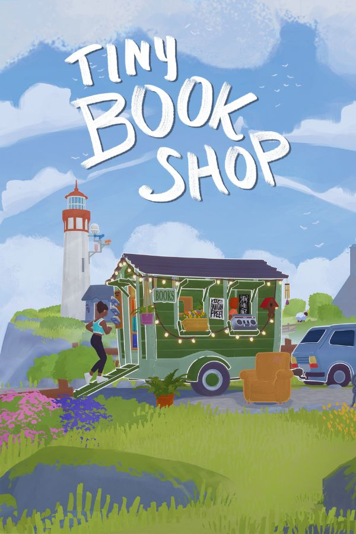

Tiny Bookshop
Every archived year-end list appearance, including placement and points earned.
About the Game
JOIN OUR DISCORD! About the GameLeave everything behind and open a tiny bookshop by the sea in this cozy narrative management game.Stock your Tiny Bookshop with different books and items, set up shop in scenic locations, and run your cozy second-hand bookshop while getting to know the locals.Decorate your Tiny Bookshop with the items you collect. Are you into absolutely plastering it with plants? Maybe a spooky candle-lit atmosphere is more your style? Every item also has an effect on your customers and can introduce new mechanics.Recommend the right book to the right person ~ or try to expand their literary horizon? Sometimes they just need a little help finding a book they will love!Befriend Bookstonbury's quirky cast of characters and help each other out! They're friendly, promise :)Stock books of different genres to satisfy the locals’ reading habits and watch your customers trickle in. Every place around town attracts a slightly different crowd, so get to know your audience and become a master bookseller!Explore the scenic places of charming Bookstonbury-by-the-Sea and learn the ins and outs of the town. Discover its long history ~ what happened at Bookston Burgh? And who really was St. Bookston?Discover secrets, collect items and grow your stamp collection as you explore the nooks and crannies of Bookstonbury. Who knows what else you'll find?We're working hard to bring the world of Tiny Bookshop to life :) You can support us by wishlisting and following us on steam.If you want even more updates on the development and to chat to some fellow book lovers, you can now find us on Discord!
| Released | 2025-08-07 |
|---|---|
| Developer | neoludic games |
| Publisher | Skystone Games, 2P Games |
| Genres | RPG, Simulation, Casual, Indie |
| Platforms | Linux, macOS, PC, Nintendo Switch |
SingleplayerSteam AchievementsFull controller supportSteam CloudRPGStory RichCharacter CustomizationCuteChoices MatterManagementRelaxingStylized
Where to Buy
Game information provided by RAWG.
Points by Year
List History
| Year | Source | List | Placement | Points |
|---|---|---|---|---|
| 2025 | Eurogamer | The 50 best games of 2025, ranked | 45 | 1 |
| 2025 | Geeky Brummie | Top 50 Most Notable Games of 2025 | 48 | 1 |
| 2025 | NPR | The best games of 2025, picked by NPR's staff | Unranked | 1 |
| 2025 | Polygon | The 50 best games of 2025, as chosen by Polygon | 23 | 3 |